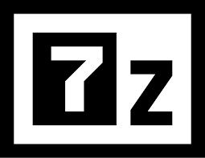

7-Zip File Manager
7-Zip is free software with open source.
The most of the code is under the GNU LGPL license. Some parts of the code are under the BSD 3-clause License. Also there is unRAR license restriction for some parts of the code. Read 7-Zip License information.
here